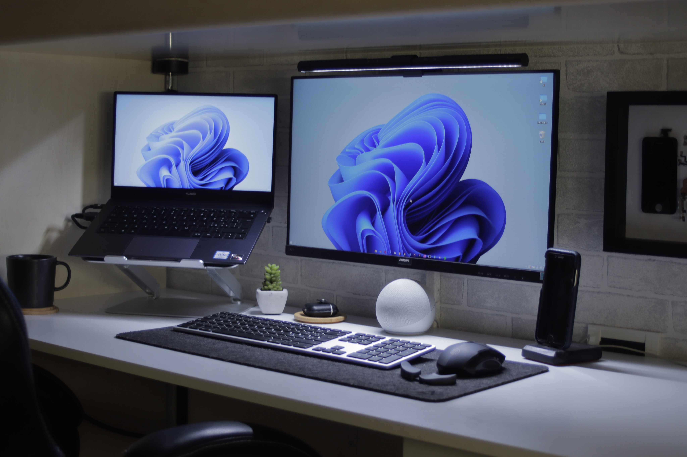
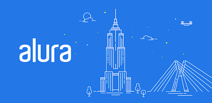

Janeiro de 2022
Conhecendo e Iniciando na Programação

Devido a pandemia, o assunto do momento passou a ser tecnologia e a
forma como aceleramos seu desenvolvimento para atender as demandas da
economia, saúde e relações sociais. Devido a esse avanço comecei a me
interessar e querer cada vez mais ingressar na área e me tornar um
programador. Comecei montando um setup e passei a consumir tudo que
era conteúdo da internet. No entanto me deparei com muita informação,
não sabia qual linguagem começar, qual carreira queria seguir e isso
foi me deixando perdido, confuso e desacreditado, que um dia
conseguiria ingressar na área de tecnologia como programador.
Julho de 2022
Lógica de programação na alura

Decidi ir atrás de um curso para me dar um rumo de como começar a
estudar e praticar, desse modo conheci a plataforma da alura, e
através dos guias de aprendizagem comecei a praticar a formação de
lógica de programação, realizei alguns projetos em html, conforme a
dificuldade das aulas aumentava, eu gostava cada vez mais.
Maio de 2023
Jornada do Zero à Primeira Vaga
Acabei deixando os estudos de lado devido ao trabalho e a correria do
cotidiano, porém um dia mexendo no celular apareceu um comunicado da
Rocketseat anunciando a NLWSPACETIME. Acabei me identificando com o
evento, que tem o objetivo de levar o programador iniciante ao próximo
nível. Me inscrevi e realizei a trilha Explorer, e a cada aula eu me
sentia mais motivado, confiante e com a certeza de que eu posso ser um
desenvolvedor. Finalizo o evento construindo essa linha do tempo, e
com um abjetivo e metas traçadas para alcançar meu primeiro emprego.